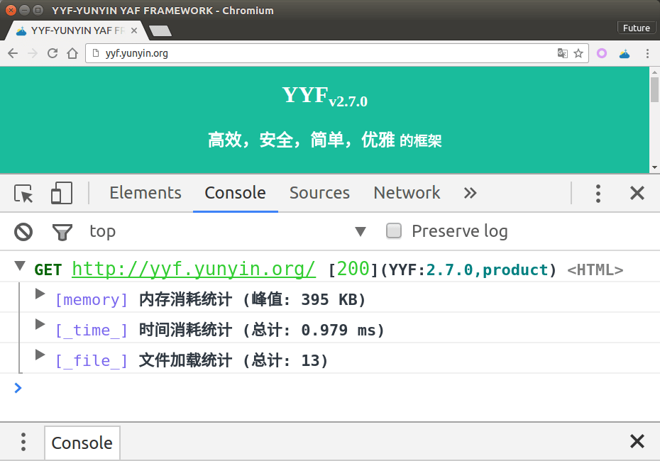
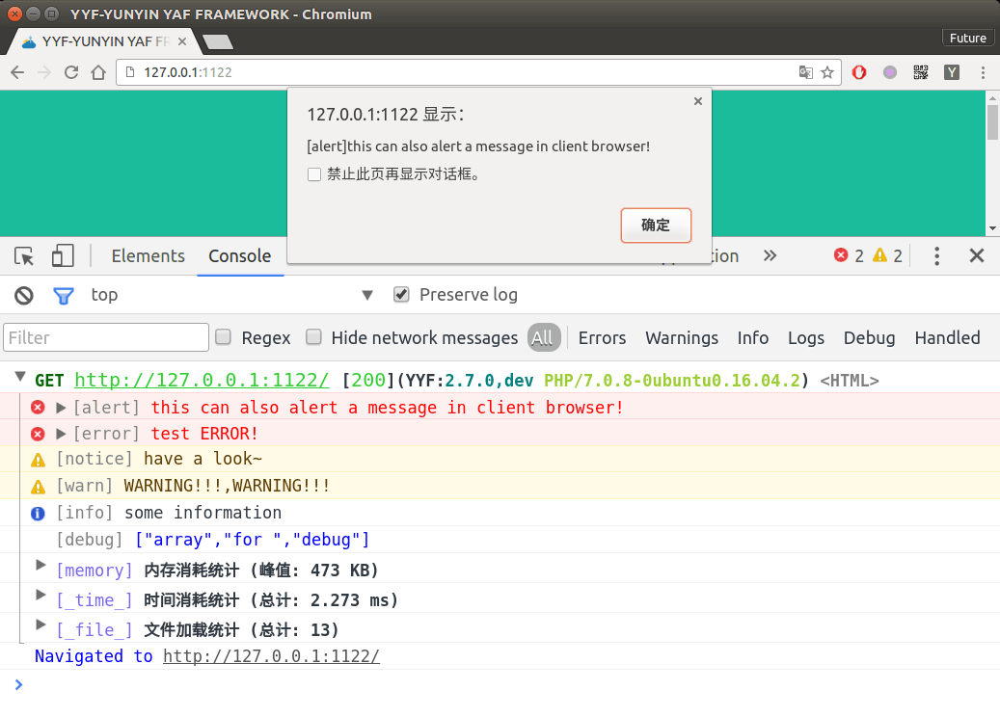
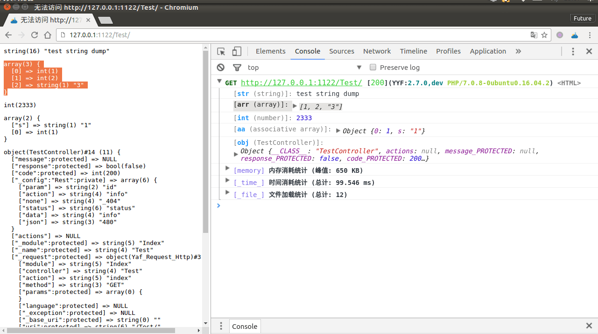

YYF Debugger
YYF 浏览器调试工具
在浏览器console显示YYF调试信息，不影响浏览器的正常输出.
效果截图
如图在浏览器中显示调试信息 
安装（一分钟）
方法一：安装已经打包的扩展 (推荐)
- 在realease页下载最新扩展 YYF-Debugger-*.crx
- 打开chrome扩展页面 chrome://extensions/
- 将下载文件拖拽到chrome://extensions/,选择安装即可
方法二：从源码安装
- 下载解压源码
- 打开扩展页面chrome://extensions/
- 勾选
开发者模式 - 加载已解压的扩展程序
- 选中对应的文件夹即可
安装完成
- 打开http://yyf.yunyin.org
- 点击扩展按钮激活(debugging)
- 打开控制台(
F12),刷新(F5) - 看到和截图一样的输出则完成安装
主要功能
- tracer信息记录[如效果图]
- SQL查询显示

- 显示服务器日志 
//服务器中执行代码如下
//开发模式默认会自动监听系统日志
Logger::alert($logger['ALERT']);
Logger::error($logger['ERROR']);
Logger::notice($logger['NOTICE']);
Logger::warn($logger['WARN']);
Logger::info($logger['info']);
Logger::debug($logger['debug']);- dump数据
//header中dump，不影响页面输出
Debug::header()
->str('test string dump')
->arr([1,2,'3'])
->int(2333)
->aa(['s'=>'1',1])
->obj($this);
//dump到浏览器
Debug::dump('test string dump');
Debug::dump([1,2,'3']);
Debug::dump(2333);
Debug::dump(['s'=>'1',1]);
Debug::dump($this);